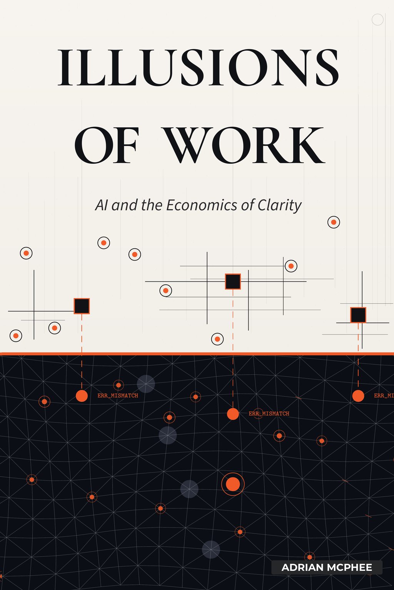

In the age of AI, reality is no longer optional.
Adrian McPhee
I have spent more than twenty years inside software-dependent corporates in roles ranging from engineer to CTO. I served as CTO of a leading ecommerce marketplace with more than 13 million customers, led a technology organisation of over a thousand people as CTO of an ECB-regulated multinational with € 10 billion turnover, and transformed how hundreds of engineers work at a unicorn fintech. I have redirected hundreds of millions in product and technology investment and written off programmes that should never have been funded.
For the past few years I have been using AI daily: building a sophisticated platform from scratch for Eccasion (eccasion.com) with serial founders of a European mobility company, leading a large-scale SDLC overhaul to make a unicorn AI-ready, and developing TuinPlan (demandops.com), an AI-native digital twin for garden planning. What I noticed across all of this work was that the real value of AI was not generation but synthesis: reconciling what people said they would build with what was actually there. Vagueness did not produce flexibility; rather, it inevitably resulted in hallucination.
When I described this pattern publicly, the recognition was immediate and far broader than I expected.
I have carried this book in my head for twenty years. AI has made these structural problems dramatically more expensive to ignore, which is why it is now in your hands. It is not, I should warn you, particularly diplomatic. It is, however, considerably less devastating than AI will be for the competitiveness of any organisation that finds it too confronting to finish.
If you have ever sat in a meeting where everyone agreed on a plan you knew could not work, and said nothing, because saying something would cost more than staying silent, this book is about why that happens, and what changes when it stops. It is about structure, not attitude.
This book is for people who work inside software-dependent corporates and suspect that something is structurally wrong. It is for CTOs, senior engineers, architects, product leaders, CEOs, board members, and investors who depend on the organisation being honest about how it works, and who have discovered that it is not. Each occupies a different position in the structure this book describes. What they share is the experience of watching technology investment produce activity without proportional outcomes, and the suspicion that the cause is not execution, talent, or technology, but something in the structure itself that no one has named.
The examples in this book are fictional, but they are not hypothetical. Each is a composite drawn from patterns observed repeatedly across software-dependent corporates in banking, insurance, retail, logistics, and enterprise software. If they feel familiar, that is the point.
There is a particular kind of exhaustion that comes from working inside these organisations if you are close to how things actually work.
This exhaustion is quieter and more corrosive than simple tiredness, and unlike the burnout people talk about, it has no obvious cause to point to: the feeling of spending your days navigating abstractions that everyone treats as real, while knowing, very clearly, that they are not.
You sit in meetings where “the business” discusses priorities that have no stable relationship to the systems that produce value. You watch strategy documents grow longer as understanding shrinks. You see engineers blamed for outcomes that were decided elsewhere, in languages that cannot be executed. You notice that the more precisely you describe reality, the more friction you generate.
The cause is not bad people, bad intentions, or incompetence, but a specific organisational form that has become widespread over the last two decades: the software-dependent corporate.
These are large, established organisations whose products and operations now depend critically on software, but whose power structures, budgeting models, and decision-making processes were designed for a world in which software was a support function: something you procured from vendors, managed through an IT department, and governed as a cost centre. Banks, insurers, retailers, logistics firms, airlines, public sector bodies, and also older companies that describe themselves as “technology companies” but still operate with these inherited assumptions all fall into this category.
These organisations are not “pre-software.” They have had software for decades. What they have not adapted to is the shift that began between roughly 2008 and 2012, when software stopped being infrastructure and became the primary medium through which these companies create and deliver value. In the space of five years, smartphones made software the default customer interface, cloud computing made custom development at scale economically viable, and the expectation that large organisations would build and operate their own software continuously went from radical to mainstream. By 2012, when the UK government adopted “Digital by Default,” the structural change was already complete: these organisations needed to become software companies. They hired engineers by the hundreds and adopted continuous delivery. The governance structures, the budget cycles, the HR frameworks, and the executive mental models, however, stayed where they were. The technology changed. The power structures did not. The misalignment has been compounding ever since.
These organisations will readily acknowledge that they have legacy software. They commission reports on technical debt, fund migration programmes, and talk openly about the need to modernise their technology estate. “Legacy” is an accepted category for systems: it implies something that was once fit for purpose but has been outgrown. Suggest, however, that the governance structures are equally legacy, that the budgeting model, the HR framework, the separation of “the business” from engineering are design choices from a previous era, not laws of nature, and the conversation stops. The reason is simple: “legacy” implies something that needs to be replaced, and the people who benefit from the current structures are the people who would need to authorise their replacement.
Branding does not matter here. What matters is whether software is the medium through which the organisation creates and delivers value, and whether the governance structures have caught up with that reality. In software-dependent corporates, the answer to the first question is yes and the answer to the second is no. Software mediates everything that matters: how customers are served, how products are built, how operations run. Yet it is still governed as a support function rather than as the system through which the business exists.
The most reliable diagnostic is linguistic. If your organisation talks about “the business” as a group of people who are not engineers, this book is about your company. If engineers are considered to work in the business by default, it probably is not.
Once that fundamental split exists, adhering to reality effectively becomes optional.
When reality is optional, the people closest to it suffer first.
Throughout this book, people closest to reality refers to those whose effectiveness depends on clear ownership, explicit constraints, and direct contact with real systems and customer outcomes. They are often engineers, but they also exist in product, design, data, and leadership roles. What they share is not seniority or status, but an inability to function well when ambiguity is rewarded and truth is negotiated. The claims handler who knows every process exception the system does not encode. The operations analyst whose shadow spreadsheet reconciles what the official reports cannot. The compliance officer who carries the real regulatory interpretation in her head because the documented version has not been updated in three years. These people are closest to reality not because of their job titles but because the work they do collapses without accurate information.
These people are not necessarily performing at a high level in such organisations. In fact, the system often prevents them from doing so. Their frustration is a structural consequence of working in an environment where representations of work are treated as substitutes for reality.
The illusions this book describes are not organisational stupidity. The narratives that replace reality, the fake products, the avoidant architectures, the processes never written down: none of these are failures of intelligence but coping mechanisms. They are how intelligent people remain functional inside a structure that will not let them do real work. The vagueness protects them. The fiction gives them something to point to. Every illusion serves someone’s need to remain sane inside a system that refuses to confront its own contradictions.
Since the shift to software-mediated value creation, software-dependent corporates have survived this misalignment by making reality expensive and vagueness cheap. Understanding the system required meetings. Reconciling strategy required interpretation. Connecting cost to value required politics. The dysfunction was real, but it was survivable. Human synthesis could bridge the gap expensively, and market position provided insulation. Capable people suffered, but the organisation endured.
There is a test for how deep the misalignment runs. Until recently, it was too expensive to apply.
That is no longer true. Rather than introducing a novel problem, AI removes the insulation that allowed an old pathology to persist.
Artificial intelligence rarely fixes broken organisations directly; instead, it does something far more disruptive. It changes the economics of clarity. In doing so, it turns more than a decade of survivable dysfunction into structural incompatibility. Organisations that cannot produce explicit, machine-readable descriptions of how they work cannot use AI for the thing that actually matters: continuous reconciliation of strategy, execution, and reality. They will be limited to copilots and content generation, useful, but incremental. Their competitors who can describe themselves clearly will have fundamentally different economics: faster decisions, cheaper adaptation, honest feedback loops. Far from closing, this capability gap will only continue to compound.
Here is what makes this urgent. The people who could make AI actually work, those who have the domain knowledge, who understand the real system, who know which parts of the architecture are fiction, are the same people the organisation has been exhausting since that shift began. They are the key to everything the organisation says it wants from artificial intelligence. They have the precision, the context, and the understanding of how the system actually behaves. Ultimately, they are burned out, disengaged, or gone. The organisation drove out precisely the people it now needs most.
AI rewards precision, explicitness, and versioned representations of reality. It cannot operate on narrative, implication, or organisational ritual. It does not care who said something, how senior they are, or how often it has been repeated. It only cares whether what is written can be read, reconciled, and reasoned about.
This means something specific. A clearly written strategy document is not enough. A well-maintained wiki is not enough. The descriptions of how the organisation works, its processes, its ownership boundaries, its contracts, its constraints, must be structured so that a machine can parse them, compare them against the codebase, and report contradictions without human interpretation. In this context, being machine-readable constitutes a hard structural requirement rather than merely a synonym for being well-written. Most organisations that believe they have documented their processes have not met this bar. They have produced artefacts that require a human to read, interpret, and bridge to reality. That bridging is exactly the expensive, fragile, political work that AI eliminates, but only when the inputs are machine-readable.
The same conditions that make AI useful are the conditions that make organisations humane and effective again. The antidote to the frustration experienced by people closest to reality is the same thing that feeds AI: explicit, machine-readable, versioned, owned descriptions of how the organisation actually works.
There is a simple test. If an AI system attempts to synthesise an organisation from its artefacts (strategy documents, process descriptions, architecture models, and codebases), will that synthesis converge on something coherent? Or will it collapse into contradiction and hallucination?
The answer depends on whether the organisation’s business processes, and the ownership, strategic goals, data models, system boundaries, and constraints that follow from them, exist as machine-readable, owned descriptions that can be parsed and reasoned about without human interpretation, or whether they exist as implicit knowledge carried in people’s heads and negotiated in meetings.
This is the spine of the book. The first half is a diagnosis, and it is not comfortable. If you have been punished for precision, exhausted by coordination, or silenced because your understanding of the system was unwelcome, you will recognise the patterns described. The second half describes a structure where those experiences stop. Not because the organisation becomes kinder, but because the economics no longer permit the alternative.
What follows is an examination of why software-dependent corporates reliably produce illusions of work, how those illusions turn into activity without progress, and why a different organisational structure is now both possible and necessary, rather than a call for better communication, more alignment, or another round of transformation.
It also explains why the dysfunction persists. If the pathology were merely accidental, competition would have eliminated it. It has not, because an entire ecosystem of roles, frameworks, and vendors has evolved to sustain it. This book calls it the Alignment-Industrial Complex: a system that converts structural incoherence into billable work, ensuring the diagnosis is never “we are organised incorrectly” but always “we need better alignment.” Understanding why the illusion survives is as important as understanding what it costs.
The book is organised in eight parts. Parts I through IV (The Split, How People Cope, What the Machines See, What Was Never Written Down) are the diagnosis: how people cope with structural dysfunction and what it costs them. Parts V and VI (Now Go Faster, Why Nothing Changes) are the turn: what happens when AI arrives and the structures that sustain the dysfunction fight back. Parts VII and VIII (The Fix, What It Looks Like) describe what changes when the structure stops working against the people inside it.
You do not need to read the book in order. If you already recognise the diagnosis, if the first few chapters describe your organisation and you want to know what to do about it, start at Part V or go directly to Parts VII and VIII. If you are a CEO, board member, or investor who needs the structural argument without the full diagnostic, Parts V through VIII contain it. The structural corrections described in this book require executive mandate. Process ownership, contract enforcement, and budget envelopes cannot be implemented unilaterally by engineering. A companion book, Illusions in the Boardroom, develops the governance case for authorising these changes. This book is written primarily for operators. That one is written for boards. The earlier parts will still be there when you want to understand why the patterns are so persistent.
The economics have shifted, and the price of pretending now exceeds the price of confronting reality.
The CEO of a mid-sized European insurer is eighteen months into her tenure. She has done what a competent CEO should do.
She hired a respected CTO from a digital-native company. She funded a three-year technology modernisation programme at € 40 million, more than the board wanted, less than the CTO asked for, a reasonable compromise. She approved a new organisational structure: product-aligned teams, a platform group, an architecture function, quarterly reviews tied to business outcomes. She attended the first two quarterly reviews personally, to signal commitment.
The strategy appears coherent, the CTO is capable, the funding is secured, and the board remains supportive.
Two years in, the results are mixed. Some metrics have improved: deployment frequency is up, a customer-facing app has launched, the recruitment brand is stronger. The core measures she cares about, however, have not moved: time to market for new products, operational cost per policy, customer retention. Two major initiatives have been quietly descoped. The CTO reports progress. The CFO reports cost. Neither report contradicts the other. Neither explains why the organisation feels no different.
She asks her direct reports. Each gives a plausible account. The CTO says the legacy systems are harder to untangle than expected. The CFO says the technology spend is growing faster than the revenue it was meant to unlock. The COO says the teams are still learning to work in the new model. The HR director says engineering retention is a market-wide problem.
None of them is lying. None of them is wrong. None of them is describing the same organisation.
She commissions an external review. The consultants produce 120 slides. The diagnosis is familiar: alignment gaps, unclear ownership, siloed delivery. The recommendation is another reorganisation, a new operating model, a governance framework. She has seen this pattern before, at her previous company. She approved the same kind of review there. It produced the same kind of recommendations. She left before the results were visible.
She suspects the problem is not alignment, or talent, or even legacy technology. She suspects it is something in the structure itself, something that makes every reasonable decision produce unreasonable outcomes. She cannot name it, because nothing in her reporting, her reviews, or her advisory relationships is designed to make it visible.
She approves the consultants’ recommendations because no concrete alternatives have been presented for consideration.
The underlying condition is a failure of legibility. No business process in the organisation is defined explicitly enough to connect the strategy to the systems that must enact it. Each report is locally rational. Each function is incentivised to optimise within its own boundary; no one is rewarded for exposing the contradictions between them. None can be reconciled with the others, because no shared description of how the organisation actually works exists to reconcile them against.
For now, the gap is survivable. Humans perform the synthesis socially: through meetings, intermediaries, and the institutional knowledge of those who have been there longest. It is expensive, fragile, and entirely dependent on the continued presence and goodwill of the people doing the translating. Yet, despite its fragility, this social synthesis manages to keep the organisation functioning.
The quarterly business priorities meeting runs for ninety minutes. Fourteen people attend. A senior director presents the list: twelve items, each described in language that sounds decisive. “Accelerate digital onboarding.” “Improve cross-sell conversion.” “Enhance operational resilience.”
Lisa, a principal engineer with eleven years at the company, sits three chairs from the end of the table. She has built or maintained systems that touch nine of the twelve priorities. She knows, with the specificity that comes from reading error logs and tracing database queries, what each of these phrases would require. It is the kind of knowledge that takes a decade to accumulate and thirty seconds to ignore.
“Accelerate digital onboarding” means rewriting a flow that currently passes through six services, two of which are maintained by a team in another country that has a four-week change request cycle. “Improve cross-sell conversion” means surfacing product recommendations inside a transaction flow owned by a different department, whose API has not been updated since 2019. “Enhance operational resilience” means the payments system fell over twice last quarter and nobody has approved the infrastructure work to prevent it happening again.
None of the twelve items specifies a system. None names a team. None defines a measurable outcome beyond a direction: higher, faster, better. The prioritisation is performed by debating which of these phrases matters most, as though ranking aspirations were the same as allocating engineering capacity to concrete changes.
Lisa could map each item to the real constraints. She could say which ones conflict, which ones depend on shared infrastructure nobody wants to fund, and which ones will be quietly abandoned by March. She has done this before, in previous quarters, in different rooms.
Throughout the entire discussion, neither she nor any other engineer is consulted.
The meeting concludes with agreement on the top five. A product manager is assigned to each. Work begins on the roadmap. The roadmap will be presented to Lisa’s teams as commitments. Her teams will estimate against items whose scope is undefined, whose dependencies are unacknowledged, and whose success criteria do not exist.
This sequence of events unfolds on an otherwise ordinary Tuesday.
In a healthy organisation, “the business” is the collective set of activities through which value is created. Within a software-dependent corporate, however, this unified definition quietly breaks down. “The business” becomes a group of people who define intent, set priorities, and claim outcomes, while engineers are positioned as a delivery function that executes those decisions. Product management is inserted as a translation layer. IT or digital is treated as a cost centre. Finance provides the language of truth through lagging indicators.
This separation is structural, and everything that follows originates from it.
The moment engineers are excluded from the core definition of “the business,” operational reality is reduced to merely advisory status. Strategy becomes detached from execution: decisions are made in forms that cannot be tested against the system that must realise them, feasibility is discussed abstractly, trade-offs are deferred, and when reality pushes back, it is framed as resistance rather than feedback. This is locally rational: the people who set direction are evaluated on the direction they set, not on whether the system can execute it. Ownership dissolves because no one owns an outcome end-to-end; responsibility is distributed across functions that do not share incentives or context, producing accountability without agency. The system becomes structurally incapable of learning, because success and failure are attributed to the wrong causes, the organisation cannot see the connection between decisions and consequences, and it can only attribute outcomes to effort, attitude, or luck. Coordination replaces autonomy: since no unit owns a complete slice of value creation, work must be synchronised through meetings, plans, and process, and the organisation begins to confuse the sensation of effort with the evidence of progress.
The phrase “I’m not a techie, I’m in the business” is treated as a joke, but it is a confession: value is being defined by people who do not and cannot see the system that creates it.
Effective companies avoid this problem entirely by refusing to treat operational reality as a negotiable concept. Engineers work in the business. Strategy discussions include implementation constraints by default. Architecture decisions are business decisions. The org chart does not encode a separation between deciding and doing.
Software-dependent corporates resist this integration because it threatens existing power structures. It collapses the distance between decision and consequence. It forces the people who set direction to understand the system they are directing. For many executives, this feels like a loss of authority. The economic cost of maintaining that distance accumulates in coordination overhead, capital mispricing, and structural fragility that no financial report captures.
For years, this structural split was survivable because the cost was absorbed by the people closest to reality. The next chapter explains what that cost looks like.
It happens quietly, far from any crisis or confrontation.
A principal engineer at an online fashion marketplace flags a risk in an architecture review. The risk is acknowledged but deprioritised. She points out that a commitment made to the board cannot be delivered as described. She is told to “find a way.” She suggests an alternative approach that would achieve the goal more reliably. The suggestion is described as “too technical” for the current discussion.
After enough of these exchanges, she stops. Not because she has lost the knowledge. She still sees the problems clearly, still traces the dependencies in her head, still knows which parts of the system are fragile and why. The cost of stating what she sees, however, has become higher than the cost of staying silent. She learns that the organisation does not want the information she has but compliance wrapped in technical language.
An operations analyst at a logistics company maintains a spreadsheet that nobody asked her to create.
It tracks every exception in the fulfilment process: the customers whose orders require manual intervention, the carrier routes where the standard SLA does not apply, the product categories that need special handling documentation, the warehouses where the inventory system’s count diverges from physical stock by more than the acceptable threshold. The spreadsheet has forty-seven columns. She updates it daily. It is the only accurate record of how the fulfilment process actually works, as opposed to how the system says it works.
When the company decides to replace its order management system, nobody consults her. The requirements are gathered from process owners who describe the process as it is documented, not as it operates. The new system is specified, built, and launched over fourteen months.
Within three weeks of go-live, the same exceptions return. Carriers flag shipments that do not meet special handling requirements. Warehouse staff discover that the inventory reconciliation logic does not account for the discrepancies they have been managing manually for years. Customer service begins receiving complaints about orders that the old system would have routed to manual review but the new system processes automatically, and incorrectly.
She rebuilds the spreadsheet. It takes her two weeks. She adds twelve new columns for exception types that the new system has introduced. Nobody asks where the spreadsheet came from, or why it is necessary, or what it implies about the system that was supposed to replace it.
Her manager praises the new system in a quarterly review. He mentions that the transition was completed on time and under budget. He makes no mention of the spreadsheet, as he remains entirely unaware of its existence.
While the industry and specific roles evolve, the underlying pattern remains consistent.
In software-dependent corporates, the people who suffer first are not the least capable but the most reality-bound.
They are the people whose effectiveness depends on clear ownership, explicit constraints, and contact with how systems actually behave. They notice incoherence early. They see the cost of ambiguity before it shows up in financial results or executive dashboards. They can tell when a plan is not merely optimistic but structurally impossible.
Within a coherent organisation, such a focus is a distinct advantage.
However, within a software-dependent corporate, it quickly becomes a severe professional liability.
These organisations do not fail to reward competence because they dislike competence. They fail to reward it because competence collapses options. It reduces the space in which narratives can remain unchallenged. It forces decisions to become specific, which forces responsibility to become local. Such local responsibility is threatening to hierarchies that have learned to operate through diffusion.
In a structure where reality is negotiable, precision feels disruptive. What is labelled as poor communication is often structural contradiction made visible.
Within a software-dependent corporate, reality-bound people face a predictable set of punishments. These punishments are rarely made explicit; instead, they are embedded within the organisation’s structure.
They are asked to estimate work whose scope is undefined, against deadlines whose origins are political rather than technical. They are asked to build systems around boundaries that do not exist, to treat slideware as constraints, and to accept accountability for outcomes they cannot influence. They are expected to say “yes” to plans they know will fail, because saying “no” creates friction and honest estimates imply timelines that stakeholders do not want to hear.
If they refuse to conform, they are quickly labelled as difficult.
If they choose to comply, they are forced into an uncomfortable daily hypocrisy.
Neither of these compromises offers a sustainable path forward.
The silence spreads, and other engineers notice who gets rewarded and who gets labelled. The ones who speak in plans and milestones advance. The ones who speak in mechanisms and failure modes are sidelined. The ones who say “we can do this” get promoted. The ones who say “we cannot do this, but we could do that instead” get managed. The organisation selects for fluency in representation and against fluency in reality.
Over time, two populations emerge: those who have adapted to the representation layer, who have learned to speak in roadmaps, OKRs, alignment language, and strategic narrative, and those who have not. The adapted population rises. The unadapted population leaves, disengages, or is pushed into increasingly narrow technical roles where their reality-orientation cannot disrupt the narrative. Senior engineers become “technical leads” without authority. Architects become diagram maintainers. Staff engineers become firefighters, called upon when the system breaks but excluded from the decisions that caused it to break.
The organisation experiences this as a talent problem, when it is a selection problem: the organisation is systematically filtering out the people it needs most.
When reality is optional, the people who insist on it become inconvenient. When vagueness is rewarded, the people who cannot produce it are disadvantaged. The surrounding system does not actively need to be hostile; it merely needs to maintain a consistent indifference towards structural truth.
Others refuse to adapt, choosing instead to maintain their blunt insistence on reality. They continue to ask where the boundary is, where the process is defined, and who owns the outcome. They keep pointing at the system and refusing to pretend. These people are often labelled as negative, not team players, or lacking in soft skills. They are described as “good technically but poor culturally.” In reality, their behaviour is rational. The system that punishes it is not. Their cultural failure is a refusal to participate in fiction.
Eventually, most of these people leave, disengage, or become absorbed into the illusion machinery. None of these outcomes is good for the organisation. The knowledge that leaves with them is not replaceable through hiring, because the problem is the environment that makes talent irrelevant, not a shortage of talent itself. A brilliant engineer cannot be effective if the system she works within prevents her from seeing reality, naming it, and acting on it.
The organisation hires replacements. The replacements arrive without context, without knowledge of the system’s real behaviour, without understanding of why things were built the way they were. They ask questions. If the organisation still has people who remember the answers, the knowledge transfers slowly and partially. If it does not, if the people who knew have already left, the knowledge is simply lost. The organisation compensates by adding more process, more documentation, more handoffs, more coordination. Each addition increases the distance between the work and the reality it is supposed to address.
What presents as a talent shortage is a structural refusal to let talent function.
A migration originally estimated to require a single sprint ended up consuming eleven weeks.
A B2B SaaS company with 800 employees, roughly 300 of them in engineering, had committed in its annual roadmap to “modernising the platform.” The commitment originated in a strategy offsite. No engineer attended the offsite. The phrase “modernise the platform” appeared on slide nine of a forty-slide deck, beneath a pillar labelled “Operational Excellence.”
By the time the phrase reached the engineering organisation, it had been interpreted as a migration from an on-premises message broker to a managed cloud service. The rationale was never written down in a form that connected it to a customer outcome. When a team lead asked what problem the migration solved for customers, he was told it was “a platform concern” and that the business case had already been approved.
Two teams were assigned. They spent the first three weeks discovering that the existing message broker was entangled with a legacy billing reconciliation service that no one had documented. The reconciliation service used message headers in ways that the cloud service did not support. A third team was pulled in to build an adapter. The adapter required access to a shared schema that a fourth team nominally owned but had not changed in two years.
Eleven weeks later, the migration was complete. Monitoring showed no change in throughput, latency, or error rates. From the customer’s perspective, the experience remained completely unchanged, as the underlying billing reconciliation process operated exactly as before. The total cost, including lost velocity on deferred work, was approximately € 380,000.
The migration was reported as a success. The teams involved were thanked in a town hall. The roadmap for the following quarter listed three more modernisation items.
No one asked whether the original commitment should have been made. No one could, because the commitment had no traceable origin in a customer need or a system constraint. It existed because the roadmap required content, and modernisation is always defensible.
Software-dependent corporates are rarely idle. They are busy in a very specific and highly disciplined way.
Calendars are full, backlogs are long, and roadmaps extend confidently into the future. Dashboards glow with colour while meetings conclude with action items, follow-ups, and alignment checkpoints. Documents are produced, reviewed, socialised, revised, and approved. From the outside, these organisations appear intensely productive.
Yet, when a simple question is asked: what exactly changed in the world as a result of all this activity? The answer is often vague, contested, or deferred.
This is the substitution of activity for progress. It is the most pervasive illusion, and the hardest to see from inside.
In an organisation where reality is optional, projecting busyness provides a safe harbour, whereas insisting on precision becomes a professional liability.
When engineers are excluded from the business, work can no longer be grounded directly in the behaviour of the systems that create value. Decisions are made in abstraction, and execution is expected to follow. When it does not, the failure is attributed to delivery rather than to the decision itself. Decision-makers are insulated from execution consequences, so the cost of a bad decision never reaches the person who made it. The feedback loop between intent and outcome is severed, and in its absence, the organisation fills the space with motion.
To compensate for this divergence, the organisation naturally begins to invest heavily in representation.
Tickets stand in for changes to systems. Roadmaps imply intent without committing to outcomes. OKRs replace strategy. Status reports replace understanding. Progress is measured by movement inside these artefacts rather than by observable effects on users or operations.
None of these tools are inherently flawed. They become dangerous when treated as reality rather than as hypotheses about reality. Once closing the ticket becomes the goal rather than changing the system, the representation has replaced the thing it was meant to represent. The slide from useful map to substitute for reality is difficult to notice while it is happening. It does not stem from a failure of intelligence, but from the gravitational pull of the organisation’s incentive structures.
Once the incentives reward the map over the territory, the organisation cannot self-correct. The cost of that substitution is measurable in capital terms, though the measurement requires connecting data the organisation has never aggregated across departmental boundaries.
Practices designed to increase contact with reality invert into rituals that preserve distance from it.
The moment representation becomes the accepted unit of progress, actual forward momentum quietly disappears.
The product review is held monthly. Each product owner presents to the CPO and a panel of senior stakeholders. It is meant to be a moment of accountability.
Mark, the product owner for “Customer Engagement,” presents third. His slides show a funnel, a set of KPIs, and a roadmap with six items colour-coded by quarter. The presentation is fluent, the narrative confident. Customer Engagement is growing. Retention is improving. The team has delivered twelve features this quarter.
Eventually, Peter, an enterprise architect, raises a structural question, asking precisely which services currently comprise the Customer Engagement domain.
The architecture review board meets every second Thursday. A team presents a proposal to extract a pricing calculation from a monolith into a dedicated service. The board evaluates it against a reference model last updated eight months ago. Forty-five minutes are spent debating which bounded context the service belongs in. In the codebase, sixty-three services follow a team structure from a reorganisation that predates the reference model by two years. The reference model describes nothing real.
The board grants conditional approval. The team lead will name the service to match the model, update the Wiki, and build exactly what she originally proposed. The board will not verify the implementation. Both parties are aware of this.
In software-dependent corporates, architecture is often presented as a source of control. Diagrams promise clarity. Reference models suggest foresight. In practice, much of this architectural activity exists to avoid accountability.
The change is straightforward. A logistics company needs to add a new delivery status, “held at customs,” to the tracking flow visible to customers. The status already exists in the customs clearance system. It needs to propagate to the shipment tracking service, which feeds the customer-facing portal.
In a system with real boundaries and owned contracts, this is two days of work. One team adds the status to its published event contract. The consuming team reads the new event and renders it in the portal. Both teams can do this independently, on their own release schedules, with a versioned contract governing the interaction. In practice, however, the actual sequence unfolds very differently.
The shipment tracking service does not own its own data model. It reads from a shared database maintained by a “data platform” team. The data platform team has a change request process that requires approval from three service owners, because any schema modification affects all consumers. The customs clearance system publishes events, but the tracking service does not consume them directly; it waits for the data platform to ingest and transform them.
A retail bank decides to map its mortgage origination process. Three departments are involved: the digital team that owns the online application, the credit risk team that owns the decisioning, and the operations team that handles document verification and disbursement.
A workshop is convened. Within twenty minutes, it becomes clear that the three departments are describing different processes.
The digital team presents the customer journey: a user fills in an application form, uploads documents, receives a provisional offer, accepts, and receives funds. They have analytics. They know where users drop off. They have optimised the funnel.
The new senior engineer spends her first week reading. The team lead has been thorough: a shared drive with architecture diagrams, a Confluence space with process descriptions, a wiki with onboarding guides. There is an operating model document, updated seven months ago, that describes the end-to-end vehicle configuration-to-delivery pipeline in careful detail.
By her third day she has questions. The operating model describes an automated validation step for customer configurations that checks battery options, drivetrain compatibility, and regional compliance before the order enters the manufacturing queue. The system she has been given access to does not contain this step. There is a comment in the code, dated two years ago, that says “validation bypassed pending new battery config rules.” The rules were never written. The automated validation exists in the documentation and in the quarterly metrics report, which lists configuration validation rates as a KPI. It does not exist in production.
She asks the team lead. He is not surprised. “That document describes what we were building towards,” he says. “The system describes what we actually did.” He opens a Slack channel and scrolls to a thread from eighteen months ago. “This is where the real decisions are. Most of them, anyway.”
What changes when a machine can read the organisation literally, without fatigue and without deference, is the cost of ignoring the diagnosis.
AI does not introduce truth; it removes the insulation that allowed illusions to persist.
A large European telecoms operator decides to pilot an AI assistant for its technology leadership. The brief is modest: given access to the company’s strategy documents, architecture diagrams, and codebase, the assistant should produce a summary of the organisation’s technology landscape and its alignment with stated strategic priorities.
The quarterly board pack is due in three days. The strategy team has been preparing it for two weeks, but the technology section is still weak. It always is. The CTO’s team has submitted their update: accurate, detailed, and unreadable. Twelve pages of service dependencies, incident summaries, and migration status. Predictably, the board will not engage deeply with such technical minutiae.
So the chief of staff feeds the CTO’s update into an AI assistant, along with the company’s strategy document and last quarter’s board narrative. The prompt is simple: produce a two-page technology summary that connects the current state of the technology estate to the company’s strategic priorities, suitable for a board audience.
The result is impressive. The summary opens with a confident statement about platform modernisation progress. It connects the migration of three services to a stated strategic priority around customer self-service. It cites a 23\
The previous chapters described what AI reveals and what it risks amplifying. The question that determines which force prevails is economic.
This asymmetry survived not one but three waves of technological change, each of which made software more central to value creation, and none of which changed the underlying power structures.
The internet was a channel you outsourced. Software became customer-facing at scale, but you procured it from an agency or ran a vendor project. No structural change was required, because software was still something you bought rather than something you built. Mobile and cloud were different in degree: companies hired CTOs, built engineering organisations, and launched digital transformation programmes that consumed hundreds of billions of dollars globally. They grafted these capabilities, however, onto existing governance structures. Annual budgets still ran on capital-project cycles. HR still used pay grades designed for hierarchical management. “The business” still decided what to build; engineering still “delivered.” The technology was modernised. The power structures were not. The majority of these efforts failed (McKinsey reported in 2018 that 70\
The delivery lead’s calendar shows forty-one hours of meetings this week. She has blocked two hours on Thursday morning for “focus time.” By Tuesday afternoon, a programme steering committee has been scheduled over it.
She does not build anything. She does not decide anything. She translates. She takes what the product manager says the business wants, what the architect says the system can support, and what the engineering teams say they can deliver, and she reconciles them into a plan that satisfies all three. The plan is presented weekly, revised weekly, and weekly rendered irrelevant by contact with the sprint.
Her role exists because no one in the organisation can talk directly to anyone else. Product cannot talk to engineering because they do not share a vocabulary. Architecture cannot talk to delivery because their artefacts describe different systems. Engineering cannot talk to the business because the business does not attend their meetings. She is the connective tissue. She holds six relationships in her head simultaneously, translating each party’s reality into a language the others can accept.
A retail bank with a ten-year-old microservices estate invests € 1.2 million in a shared platform capability: a unified event bus that would allow its mortgage, payments, and savings teams to publish and consume domain events independently, replacing a fragile point-to-point integration layer that causes an average of three incidents per month.
The platform team delivers a working prototype in four months. It is technically sound. The three consuming teams are willing to migrate. The projected incident reduction, based on the integration team’s own data, is 70--80\
The CFO kills the investment in the annual budget review. The platform “does not show ROI in year one.” The cost is visible: € 1.2 million in engineering salaries and infrastructure. The benefit is diffuse: fewer incidents, faster change, reduced coordination overhead. None of these benefits appear as a line item in any business unit’s P\&L, because the costs they would reduce are distributed across departments and reported as operational expense rather than as integration failure.
She was thirty-one when the rewrite started and thirty-four when it was quietly abandoned.
The platform was called Horizon. The brief was unambiguous: replace the claims management system, a fifteen-year-old monolith written in a language that three people in the company still understood, with a modern, event-driven architecture that would “future-proof the business.”
Katrin joined as the second senior engineer. She knew the legacy system better than anyone except the contractor who had left the previous autumn. The monolith was genuinely painful. Deployments required a four-hour maintenance window. A schema change needed sign-off from two teams that no longer existed in the organisation chart, routed through a governance function that reviewed changes it could not evaluate. Three incidents in a single quarter had been caused by the same race condition in the payment reconciliation path, each time patched differently because no one could hold the full system in their head long enough to fix it properly.
The preceding chapter established the structural precondition: the P\&L architecture must align ownership of outcomes with ownership of execution before the unit model can hold. Before proceeding to the unit itself, the strongest objections to the thesis deserve examination on their own terms.
What follows is not a summary of concerns raised by sceptical readers but an attempt to break the argument from the inside, using the book’s own evidence and mechanisms. Each case is stated as forcefully as possible, then examined for what survives. Where the objection wins, the text says so. This is not a common feature of business books, most of which prefer to leave their most vulnerable arguments unexamined on the reasonable assumption that the reader will be too polite to press the point.
The attack. The board pack vignette in the previous part is the weapon. An AI assistant produced a technology summary that was individually defensible in every fact and collectively fictitious. It did so in thirty minutes. It sounded more authoritative than anything a human would have written. The CTO marked up three corrections and sent it back, knowing the corrections would not land before the board pack shipped.
The payments unit has nine people. Two senior engineers, three engineers, a domain expert named Marta who spent twelve years in payments operations before joining the unit, a data analyst, a reliability engineer, and a unit lead who was previously a senior architect.
They own the payments process: premium collection, claims disbursement, broker commission payments, and refunds. They own the services that implement these flows, the data those services produce, and the contracts through which other units interact with them.
On a Wednesday morning, Marta notices that the refund process has a failure rate that has crept from 0.3\
The first autonomous unit is a permanent structural change, not a pilot. It operates under its own governance charter, with real authority over its process, and is evaluated by outcomes rather than by a committee. One unit operating with genuine autonomy creates selection pressure: it makes the cost of the surrounding dysfunction visible by contrast, and the question shifts from “should we restructure?” to “why does everything else still work the old way?”
The choice of which process to give to the first autonomous unit is consequential, and the temptation is to overthink it. Organisations that spend six months selecting the perfect candidate have already failed, because the selection process itself becomes a coordination exercise governed by the old model. The criteria are pragmatic, and they interact: no process will satisfy all of them perfectly. The goal is to find one that satisfies them well enough to succeed, not one that eliminates all risk.
The process must have clear boundaries. A self-contained process, one where the inputs, outputs, and decision points can be defined without requiring the entire organisation to redraw its lines, is a viable candidate. A process that is deeply entangled with every other process in the organisation is not, because the unit will spend its first six months negotiating boundaries rather than operating. Clear boundaries do not mean zero dependencies. They mean that the dependencies are identifiable, countable, and small enough to be managed through contracts rather than through meetings.
The CTO of a Nordic insurer had the first autonomous unit running for four months. Claims resolution time was down 31\
She opened the budget request for the payments unit. The decomposition work required EUR 1.4 million over six months: untangling the shared database that five product lines wrote to directly, establishing contract boundaries with three adjacent services, staffing the unit with a domain expert and two engineers who understood the payments regulatory landscape. The CFO’s question was reasonable: which business unit’s P\&L should absorb the cost? Payments was shared across four product lines. No single product owner would fund decomposition that benefited the other three. The investment that would make the payments unit possible did not fit inside any existing budget line, because the budget model priced departments, not processes, and the payments process did not belong to any department.
She escalated. The CEO agreed the investment was necessary. The CFO agreed in principle. The process to secure cross-business-unit funding took eleven weeks. By the time the budget was approved, the senior engineer she had identified for the payments unit lead had accepted an offer elsewhere. He had been carrying twelve years of payments domain knowledge that the organisation had never asked him to write down. The window for the second unit moved from Q2 to Q4. The claims unit continued to operate, producing evidence that made the surrounding dysfunction visible. The surrounding dysfunction continued to operate, producing evidence that it could outlast any change that required its own budget model to fund it.
The CISO of a European retail bank had rolled out a container scanning tool across all development teams eighteen months earlier. The tool was mandated by information security policy, integrated into every CI pipeline, and reported weekly compliance metrics to the executive team. Compliance stood at 94\
An internal audit of the payments team, which was six months into operating as an autonomous unit, revealed something the compliance dashboard could not show: the team had integrated the scanner but configured it to auto-approve all findings below critical severity, because the default thresholds produced four hundred false positives per week and the team had no relationship with the security function through which to resolve them. The scanner ran, the pipeline was green, and the security posture was unchanged.
The motor insurance unit, which had been autonomous for nine months, had a different relationship with the same capability. The unit owned its process risk, was audited against its policy commitments, and had identified that its payment card handling required specific security controls the unit lacked the expertise to build. The unit lead had contacted the security team, negotiated a service agreement, and integrated the scanning tool with custom thresholds tuned to the unit’s actual risk profile. The same tool, consumed through demand rather than mandate, was producing genuine security improvement rather than dashboard compliance.
The claims management unit ran for fourteen months. For the first eight, it was the CTO’s best argument: resolution times down thirty-one percent, customer satisfaction from 3.2 to 4.1, the gap between how claims were supposed to work and how they actually worked narrower than the organisation had ever achieved. Three other teams had asked how to adopt the model.
Then the CTO was promoted to a group role. His replacement came from the consulting division, capable and respected but focused on other priorities, with no particular investment in the autonomous unit model.
The encroachments arrived individually, each framed as procedural: line-item visibility, standard performance reviews, quarterly priority presentations. Without the sponsor’s backing, each charter reference produced a conversation rather than a resolution. By month eleven, the unit lead was spending more time defending the model than operating it.
Autonomous business units remove the need for coordination as governance, but they do not remove the need for shared understanding. What changes is the medium: coherence is maintained not by heroic individuals or social negotiation, but by AI systems that read versioned artefacts continuously and produce synthesis on demand. This chapter describes the artefacts, the synthesis layer, and the controls that connect them.
The artefacts sit within a structural hierarchy, and each level derives from the one above it. Strategy produces a small set of falsifiable commitments. The process catalogue maps those commitments to the organisation’s value-creating processes and assigns ownership. Autonomous units implement the processes they own, each within a bounded context that defines what data, services, and decisions belong to the unit. Operational data lives inside the boundary; it serves the process, not the reporting layer. Contracts govern what crosses the boundary: versioned, machine-readable interfaces through which units interact without coupling. The analytical domain sits downstream, consuming what units publish through data contracts, never dictating what they store. AI reconciliation reads the full chain continuously, from strategic commitment through process definition through system telemetry, and reports where the chain breaks. When any level is implicit, everything below it degrades into social negotiation, and the AI reader has nothing to reconcile against.
The structural distance from the inherited model is visible in the contrast:
This chapter describes a year in the life of an organisation that has made the transition. Not a utopia. A realistic picture, with remaining tensions, trade-offs, and difficulties acknowledged. The point is to show that the problems change in kind, and that the new problems are the kind that capable people can solve.
This chapter is drawn from real transitions, composited and fictionalised as elsewhere in the book. Not every one succeeded fully. Some stalled when political will ran out. What follows is what happens when the structural commitment holds.
A European insurance company with approximately 2,000 employees, of whom around 400 work in technology. It sells motor, home, and health insurance through direct and broker channels. Its core processes are mediated entirely through software. It is, by any measure, a software-dependent corporate.
\addtocontentstoc\protect\addvspace0.5em
The engineer holding two contradictory models in her head at three in the morning has been doing so for years. She knows which architecture diagrams are fiction. She knows which processes are performed for compliance rather than followed in practice. She knows, with the specificity that comes from reading error logs and tracing database queries, what the gap between the documented system and the real one actually costs. She has been saying so, in various ways, for most of her career. The organisation has found ways not to hear it.
AI does not change that by itself. A model that reads the codebase alongside the strategy documents will find the contradictions in minutes, but surfacing a contradiction is not the same as being heard. If the organisation’s response to honest information has always been to suppress it or promote around it, then an AI that reads reality is simply another voice that gets ignored. The technology amplifies whatever structure it operates inside. If that structure rewards vagueness and punishes precision, AI accelerates the production of confident, fluent, well-formatted vagueness.
What changes the structure is the decision to make process ownership real: to give the people who understand the system the authority to describe it, maintain the description, and be held to what it says. That decision has always been available. The organisations described in this book have declined it because it requires moving authority from the people who control the narrative to the people who understand the system, and the people who control the narrative are generally the ones who would need to authorise the transfer.
The economics of that refusal have shifted. Explicit, machine-readable, versioned descriptions of how the organisation works are now cheaper to maintain than the social infrastructure required to sustain the alternative. This is not a projection. It is already true. The cost of a process definition committed to a repository and validated weekly by an AI reader is lower than the cost of the meetings, the interpretive labour, the incident bridges, and the programme governance that organisations maintain in its absence.
The gap between organisations that can describe themselves and those that cannot will not stay where it is. It compounds. An organisation with explicit process ownership and machine-readable contracts can deploy AI against its own operations: continuous reconciliation, anomaly detection, automated compliance verification, synthesis across units. An organisation without those structural preconditions cannot, regardless of how much it spends on models, platforms, or transformation programmes. The first organisation gets faster every quarter. The second falls further behind every quarter. The arithmetic does not require a forecast. It requires only that the reader observe the rate at which AI capability is improving, and note that every improvement multiplies the advantage of structural coherence and multiplies the cost of structural incoherence by the same factor.
Every quarter an organisation delays the structural correction, the cost of the correction increases and the competitive position of the organisation deteriorates. This is not a metaphor but the same compounding described in Chapter 14, applied to the market rather than the balance sheet.
The structural corrections described in this book require executive will sustained over years. Sponsors change roles. Boards lose patience. The coordination layer reassembles itself through individually reasonable requests. Every failure mode described in the preceding chapters is more common than the success.
This book has not solved the political problem; it has made the political problem more expensive to ignore. The honest position is this: the structural model described in the preceding chapters works when it is protected. It fails when it is not. Whether it is protected depends on whether the people with authority to protect it choose to do so, knowing that the choice will cost them political capital, knowing that the results will be visible before the results are good, and knowing that the alternative, which is to continue governing through narrative, is more comfortable in every period except the one where it stops working.
The work required to get there is not a transformation programme but a process definition committed to a repository. A contract published to an adjacent team. A synthesis cycle that runs on Tuesday and produces evidence by Wednesday. A budget envelope that connects investment to outcome. A charter that says what the unit controls and means it.
The engineer who has carried the real system in her head for years already knows what needs to be written down. The CTO who has been drawing architecture diagrams that do not match production already knows where the boundaries should be. The CFO who cannot trace cost to outcome already knows that the budgeting model is the problem. The CEO who commissioned the last transformation programme and watched it produce activity without structural change already knows that the diagnosis was never “we need better alignment.”
Each of them has been waiting for the economics to shift far enough that the cost of confronting reality falls below the cost of maintaining the fiction. That shift has occurred. It occurred not because AI arrived, but because AI made the cost of the fiction visible to the people who were previously insulated from it.
You are reading this because you recognised something in the first few pages. The meetings where everyone agrees on a plan that cannot work. The architecture diagrams that describe aspiration rather than reality. The strategy documents that grow longer as understanding shrinks. The talented people who leave not because they failed but because the structure would not let them succeed.
You have been calculating whether the cost of speaking is worth it. The calculation has changed. The structure that made silence rational is now the structure that makes silence expensive. Not because the organisation has become kinder, but because a machine can now read what you have been carrying, compare it to what the organisation claims, and produce the discrepancy in a format that cannot be dismissed as one person’s opinion.
The question is no longer whether your organisation will confront its own contradictions. The question is whether it will do so while you are still there to help, or after you have left and taken what you know with you.
That is not a threat but the pattern this book has described in every chapter. The people closest to reality leave first. Their knowledge walks out with them. The organisation does not notice until the next incident, the next audit, the next regulatory demand that requires someone who understands how the system actually works. By then, the cost of reconstruction exceeds the cost of the correction that would have retained them.
The economics have shifted. The price of pretending now exceeds the price of confronting reality. The people who know this best are the ones the organisation has been exhausting for years.
The people closest to reality are still here, some of them, though not for much longer.
The following is the full extended process definition for claims management, referenced in Chapter 21. It illustrates the sub-process decomposition, system and data traceability, and contract dependencies that a mature unit maintains.
[fontsize=\small] process: claims_management owner: claims_management_unit
sub_processes: - name: first_notification entry_state: submitted exit_state: triaged - name: assessment entry_state: triaged exit_state: assessed - name: settlement entry_state: assessed exit_state: closed
Adrian McPhee has spent more than twenty years as an engineer, architect, and CTO inside software-dependent corporates across fintech, retail, and mobility, including a unicorn fintech, a leading ecommerce marketplace, and a multinational with €10 billion turnover. He has led organisations of up to a thousand people, delivered global platforms, and redirected more than €200M of product and technology investment. He watched the same structural dysfunctions repeat across every organisation he entered, and eventually learned to dismantle them.
As a founder and entrepreneur, he has used AI to create successful new ventures and helped leading companies adopt it for product development at scale. It is the same discipline this book argues for: explicit structure, reconciled with reality, that a machine can actually read.
He now works with leadership teams to diagnose and dismantle the patterns described in this book.
\mbox\textbfsimpleisadvanced.com/illusions-of-work/
Read the full book in the interactive reader
Start reading